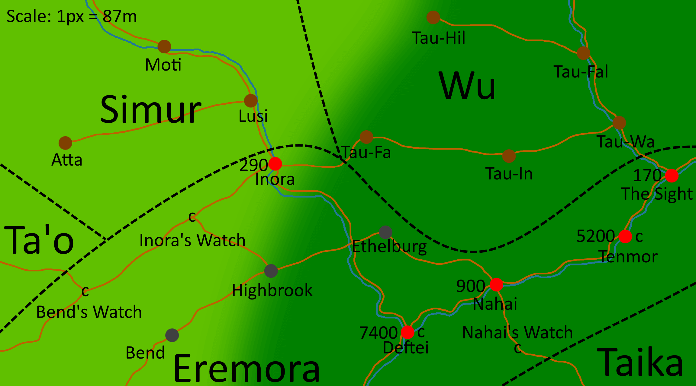
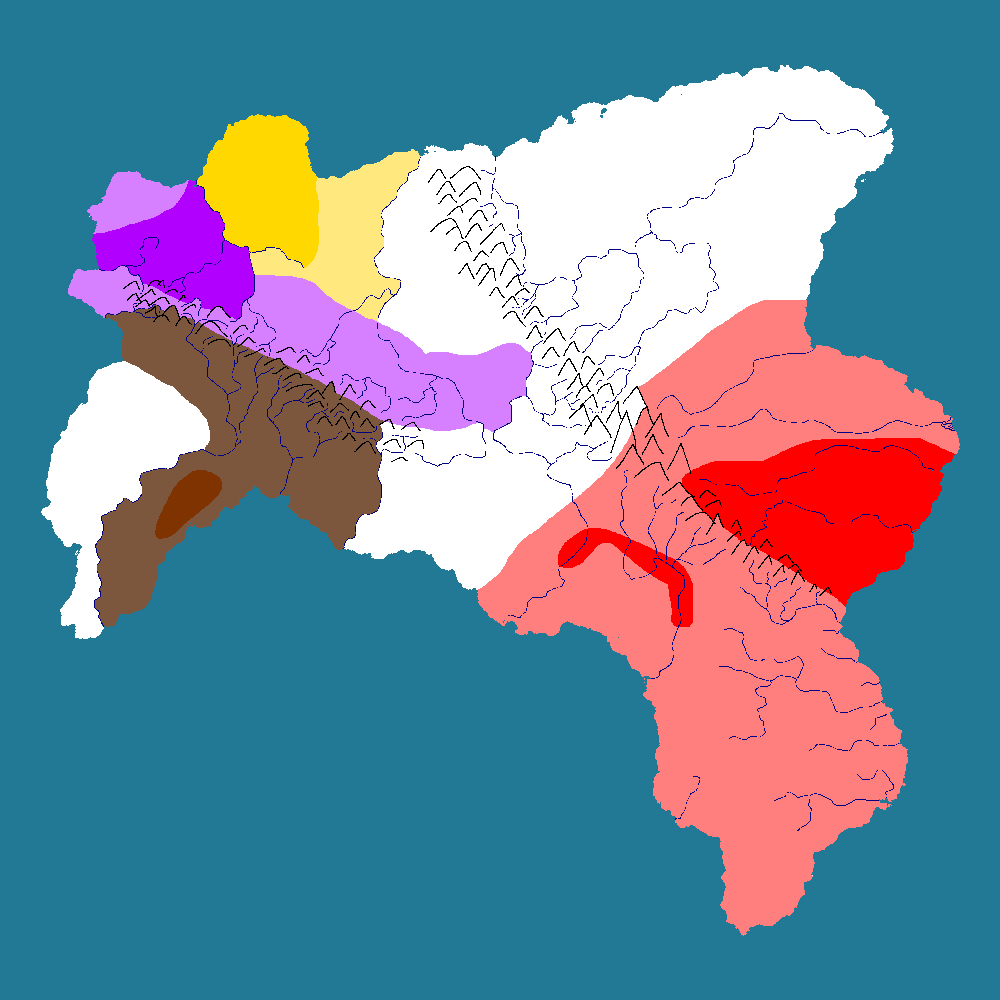

Eisen is a large gas giant, the sixth planet from Namei.
It is slightly more than nine times the mass of Jupiter, and thus it is the second-largest body in the system, comprising just over 1% the total mass.
It has many cloud bands, most of which alternate between dark khaki and olive,
except one band in the northern hemisphere, which is decidedly khaki.
There exist numerous temporary light-colored storms, but no permanent storms like our own Jupiter.
The planet has a faint ring system, only visible from Maia during an eclipse of Namei from Eisen.
Its rotation period is just over seven hours.
It is nearly in a 7:30 resonance with Neuve.
Gravitational contraction from its extreme mass causes its temperature
to be substantially above what would be expected from stellar irradiance alone
(261 K versus 87 K)
It has four major moons, one of which is an ice giant (Seter), and hundreds of minor moons, mostly captured asteroids in temporary orbits.
The four major moons, in order, are:
-
Uto, an extremely geologically active moon half the mass of Earth.
Its atmosphere is similar to, but somehow even hotter than Venus
(Not by much - just 20 °C hotter).
Its orbital and rotation periods happen to be exactly 19 hours to the second.
-
Bolt, a moon similar to Uto, but two-thirds the mass of Earth.
Its thinner atmosphere leads to the temperature being only about
20 °C warmer than Earth.
Its orbital and rotational periods are both thirty-eight hours.
Both Bolt and Uto look almost exactly like Venus, but a bit darker (especially Bolt).
- Seter, an ice giant moon.
- Maia, which contains life.
The inner three major moons are in a 1:2:4 resonance, just like the Galilean moons.
Seter and Maia are additionally in a 5:3 resonance, meaning the whole system is in a 20:10:5:3 resonance.
No moons lie within the rings, but there are four small asteroid moons just outside the ring system.
Eremor
The Eremoran Knot, symbol of Eremor.
Eremor (IPA: /'er.ə.mor/; Eremoran: eremor Eremor) is the cradle of Pankairian civilization, and the capital of Eremora.
It contains 15,000 people and spans about 12 square kilometers.
Much of it sits on the mouth of the Akkapa, safe and secure on almost all sides.
Despite its great power, the capital province itself is quite small - about one-third the area of Hong Kong.
The king's castle and administrative center lie on a large, heavily fortified island (Victory Island) at the river's mouth.
Much of the remaining city is protected by the Great Wall of Eremor, which is just over ten kilometers long.
From Eremor, totality of solar eclipses can last over 14 minutes, causing the temperature to drop as much as 6 °C.

A surface map of Eremor bay (Also called Akaban). Red - City Center.
Light Red - Capital territory. Dotted brown line - Great Wall of Eremor.
Written history began about ten thousand Nameian years ago, when a culture with an unknown name (Proto-Eremorans) first constructed cities in the area.
These cities engaged in trade with each other and other neighboring cultures, including the Eremorans.
About nine millennia after the first written records, the Eremorans, a local culture, conquered Eremor.
Soon after, they also conquered much of the lower river basin.
Within a few centuries, all Proto-Eremorans were assimilated into Eremoran culture, and all that remains of their mother culture is a handful of loans and myths.
The hydronyms Akkapa and Akaban are widely believed to be such loans.
The city has a hot semi-arid climate (Köppen BSh), with three main seasons: summer, monsoon, and winter.
The bay area itself receives much less precipitation during the monsoon than the areas east.
The city and surrounding province are located in plant hardiness zone 12a.
Due to the width of the Akkapa and significant seismic activity, there is no bridge between the banks.
This side is mostly populated by fishers and farmers who use reed boats to cross the river.
These small boats are the property of the community and may be used by anyone.
Eremora

A map of Eremora and surrounding peoples.
Eremora is the kingdom controlled by Eremor.
It spans an area of roughly 30000 km² and contains about 750,000 people.
They speak Eremorôm (Eremoran).
Eremorans themselves call Eremor and Eremora Eremor, but here they are separated for clarity.

Zoom on Central Eremora.
Geography
At the mouth of the Akkapa lies a substantial mangrove ecoregion,
one of the world's largest.
In the southeast, there is a large area of salt marshes.
Along the eastern border lies a subtropical desert.
Along the western border lies hilly arid woodlands.
Much of the rest of the country is arid shrubland,
including the capital of Eremor.
History
Pre-Eremorans
The kingdom of Eremora is about 1000 years old.
The ethnonym 'Eremor' comes from the Eremoran for 'red people'.
This is in reference to the revolution which established the new kingdom.
There is a guild of sorts, of travellers, called the Enklár, sworn to protect each other.
In recent times, Inoran raiders have been threatening the positive relationship between Eremora and the Simur.
Perhaps it is time to hire some mercenaries to deal with this issue...?
The old royal house of Eremor is still extant, and all living members trace their lineage through Temêr's son Ker, and call themselves the Kesu.
Enatic descendants from Temêr's only childbearing daughter Easur are also extant, through her daughter Netar, forming the Enatic house Netasu.
Members of the house are thus also matrilineal descendants of Siokar, queen consort of Temêr the Great.
Combined, many thousands claim membership.
The Invasion
Much of pre-Eremoran history was lost during the Eremoran invasion/revolts,
which forms the basis for the modern datekeeping system (AT/BT).
What is known is that, in BT Eremora, the population's ethnicity was approximately
two parts Eremoran, one part pre-Eremoran, and one part other.
After the revolution much of the pre-Eremoran lesser nobility was chased out of the country, or executed, and were replaced with Eremoran officers from the war.
The greater houses, including the old imperial house, were kept to help maintain influence.
There was a cyclical pattern of rulers persecuting Pre-Eremorans and letting them be in an effort to extinguish their political influence,
and these policies had varying degrees of effectiveness.
It would take a few centuries AT for the culture to effectively merge with modern Eremoran culture.
The Republic
Despite the massive changes to the overall power structure during the invasion,
one thing remained the same - the kingdom.
Although nominally wielding absolute control over the state,
the monarchs of Eremor largely took a back seat to powerful advisors (hanumor).
This continued until the reign of fifth Eremoran king,
Heksur "cursed",
whose original name was ordered stricken from all records.
Not content to let his advisors control his realm,
over his reign he took increasingly bold actions without consultation,
much to the chagrin of the hanumor,
ultimately leading to his deposition and the establishment of the republic in 550 AT.
The republic had a very peculiar structure.
While to most it might conjure images of democratically elected leaders,
The republic of Eremor was formed from the ker (masters),
who came from three sources: the endur (old aristocracy),
aramabokusar (local clique leaders),
and to a much lesser extent the baliêr (merchants).
The kemam (senate) composition was carefully balanced by elites to keep powers in line,
but over the years the baliêr gradually grew in power.
After several centuries (1650 AT) the baliêr class grew so powerful they posed a serious threat to the other two factions,
and if no action were taken the baliêr would have taken complete control over the country.
Realizing this, the idisur ("first man", the senate leader)
attempted to make a backroom deal with the most influential leader of the subir (soldier) class -
Inorasur Hislenar "Idsuror" Kur (lit. "Hislenar one-eye the great of Inora").
By conquering large tracts of neighboring land, and appointing members of the ker and aramabokusar classes,
the old power balance could be retained.
This plan, however, was incredibly risky -
Failure not only meant losing the control of the kemam,
but also the support of their own people,
leaving them especially vulnerable.
Hislenar already had different plans from the start.
He made sure every one of his victories was very known to both the new cities under his control,
and to the 'folks back home'.
Conquering town after town, clan after clan of Taika land made him very popular,
and suddenly the old elites had a new threat - Hislenar.
Some of the old elites, realizing what was going on, attempted to have Hislenar stripped of his position,
but he was simply too popular by this point,
and the senate fell into the complete control of the baliêr in a coup,
and Hislenar was the first 'new king' of Eremor.
The Great Power of the South
Rising from poverty on his merits alone, Hislenar recognized the importance of surrounding oneself with experts.
He took a highly meritocratic approach to appointments,
surrounding himself with military experts and the intelligentsia.
Today he continues his crusade on the nations of the south,
in hopes of uniting the entire region,
and perhaps, the continent as a whole...
Appearance
Eremoran males have an average height of 165 cm height,
and females an average height of 160 cm height.
Their complexion ranges from fair to light brown.
Hair color is typically black, but browns are also common.
Eye color is invariably brown.
For clothing, please see the fashion section.
Signing
In addition to its rich system of paralinguistic clicks, Eremoran contains many hand gestures carrying meaning.
Their use is so common among Eremorans that many of the more common gestures are even understood in neighboring cultures.
Since they originated among traders, many of the signs concern commerce.
- Beautiful
- With the dominant hand flat, palm towards the head,
- The hand "scans" the face from top to bottom,
- Then the Good gesture is signed.
- Everything, Everyone
- With the dominant hand centered in front of the person, with the index finger pointing downwards,
- "Draw" a circle with the finger.
- Disturbance
- With both hands in fists in front of the person, touching, as if holding a staff horizontally,
- Rotate the non-dominant hand upwards, and the dominant hand downwards, as if to twist the staff.
- Don't Know/Understand
- With the dominant hand in a fist, the same side of the head is knocked twice, about an inch above the ear.
- Fast
- With the non-dominant hand held out about a foot and a half,
- The fingers are snapped while simultaneously raising the hand.
- Gift
- Dominant hand centered in front of speaker, palm up.
- With the non-dominant hand, the palm is "swept" twice.
- Good
- With either hand, held as if grasping a one-inch staff,
- With nails touching the lips,
- The hand is dropped down and fingers splayed.
- Hello
- Single downwards nod of the head.
- Shares all other meanings of the interjection hênlom.
- Here
- Both index fingers pointed down at the ground.
- Know/Understand
- Initially begins identically to the gesture Don't Know.
- Instead, the fist is briefly held about two inches from the head.
- Finally, the air above the hand is "flicked" upwards.
- Write, Receipt, Sign
- With the non-dominant hand flat, palm facing the speaker's head,
- With the dominant index and thumb in a pinch,
- The dominant hand is moved around the palm, as if writing.
- [Question Gesture]
- In tandem with another gesture, the head is tilted towards the dominant side.
- Often, the eyebrows are raised.
Finger-counting is done starting with the dominant thumb, and extending left, as in much of Europe.
Humans are pointed at with all fingers, not just one, as for non-humans.
Culture
A local intersection in an Eremoran city.
Economy
Haggling for everything is common in cities,
but uncommon in the country, except for only the most expensive goods,
or if you have no coin and expect to barter.
City folk expect to be paid in coin,
but in the country paying for things with essentials like
rice or bread is common.
In small towns where everyone knows everyone,
credit is common.
No such leniency exists in cities.
Cloth and clothing account for two thirds of Eremor's exports,
and rice one tenth.
Spices and copper are minor exports.
In terms of export destinations,
exports are distributed fairly equally.
Iron accounts for a third of Eremor's imports,
cotton a further third,
tea and spices one sixth,
and palm oil one tenth.
Paper and ceramics are minor imports.
In contrast to exports,
import sources heavily skew towards eastern Pankair -
nearly four fifths comes from the east,
half of which coming from Važcudic lands specifically.
The agricultural sector primarily produces wool, rice, and more recently, tea.
The tea sector has grown rapidly in the past century,
going from almost nothing to being a major supplier for western Pankair.
Eremor's primary raw export, however, has always been wool,
and it is the primary supplier for much of eastern Pankair.
Minor exports include timber, fruit, and silk.
Family
No institution is considered more important than the family.
There is no greater sin than one committed against one's own family,
and no greater insult than to insult one's family.
Death
Funerals are held as soon as possible after death in shrines,
and buried immediately afterwards.
Often, the entire process from death to burial is just a few hours.
In the upper class, it is the norm that only the eldest male inherits,
but among the lower class it is common to evenly share the inheritance
among the surviving sons, or daughters, if there are none.
Marriage
Eremoran marriage is strictly monogamous.
Priests commonly bless marriages,
but they are considered a family matter,
not a legal or religious institution,
so the ultimate authority of marriages is considered to be the family elders.
If they do not recognize a marriage, it is not considered valid.
Daughters are expected to marry into richer families,
and despite how unrealistic it is to expect every daughter to do so,
failure inevitably results in disappointment.
No such expectation is held for sons,
but such marriages are of course welcome.
Once daughters are married off, they are considered part of the husband's family,
and their welfare is their responsibility.
Arranged marriages are common among the lower class and universal among the upper class.
Usually, it is the family elders that make arrangements,
rather than parents or immediate family, as they are considered the most knowledgeable in these endeavors.
Same-sex relationships are not crimes, but are frowned on.
Marriage between such couples would be totally inconceivable,
even by the couples themselves,
and would never be approved by the elders at any rate.
Food
Compared to other Pankairan cultures,
little meat is consumed, and few meats are considered fit for consumption.
Consuming chickens and wild fowl is the most common.
Lamb and fish are also widely consumed, depending on the region.
Pork is rarely consumed, and considered exotic foreign food.
To consume work-animals like cattle or horses is an unthinkable affront to the gods.
Many people are entirely vegetarian.
Lower-class Eremorans living in the big city eat shellfish, but its consumption is unheard of elsewhere -
lobster, crab, and shrimp are considered food for the utterly destitute, and barbarians.
The upper class eats insect larvae as a delicacy.
There are three meals, the largest and most important of which being breakfast.
Lunches and dinners are light.
Rice is considered a given for meals,
and there are usually vegetables and meat too.
Flatbread is common, too.
Meals are generally eaten with hands or spoons,
but in recent years it has become popular among the upper class to import chopsticks from the east.
Meals are usually consumed with tea,
but in the evening, alcoholic drinks like sake and berry wines are common too.
Water can be consumed in a pinch, but that is no one's first choice.
Milk is only consumed by infants, and never cow's milk.
Eremorans are aware of the existence of coffee,
but it is considered a weird, foreign herbal tea.
Tea
Tea-drinking is an ancient practice taken from Važcudic cultures,
having been practiced for over two millennia.
Native to the eastern slopes of the lowlands of Nadnekis,
the crop has since spread to half the continent.
Eastern Pankair has a rather rich and intricate tea-drinking culture,
which was brought into Eremor in the Pre-Eremoran era.
Thus, many terms pertaining to tea are loans from Važcud that have passed through Pre-Eremoran.
Tea is typically prepared in a chawan if serving one person,
or a cauldron if serving many, but some, especially nobles and northerners,
use a teapot or gaiwan instead.
The most popular variety is tasut tekkat (green tea),
due to ease of production.
Fashion
Women dress rather conservatively,
usually with dresses light in color and weight that go an inch or two above the ground.
Among women of the upper class, simple makeup is common, and done with various minerals and plant dyes.
Men of upper class dress similarly to women, even down to the makeup.
Men of lower class often wear not much more than a tunic, and perhaps sandals or boots,
while men of the lowest class wear nothing more than a loincloth.
Men tend to have shoulder-length hair, or sometimes a bit shorter, but not by much.
Women's hair always goes down to at least their shoulders.
Some upper-class women can have very long hair.
Everyone bathes in the local stream or pond at least once a week.
Some nobles can afford to build their own private baths.
Law and Order
Bribes are an expectation if one expects the government to do anything.
The only job of the police is to stop crimes being committed.
They do not investigate crimes (that is the job of the local magistrate)
or hand out punishments (that is the job of the community),
although it is typical of them to beat criminals who waste their time on something silly like a chase.
Attempted crimes are not considered crimes at all, and are mostly met with just a scolding.
The courts are slow, but generally just and free of corruption.
Nevertheless, they are a last resort -
it is generally in both parties' best interests to come up with some kind of agreement, however imperfect.
In court, the two parties present their argument in front of the local magistrate,
who either rules immediately or takes their time to carefully collect and review evidence.
Sentences typically involve payment in the form of currency or food, or community service.
Imprisonment is a foreign concept - for serious enough crimes, it would be an execution instead.
Impatient family of the victims often take this execution into their own hands rather than waiting for the courts -
magistrates do not typically mind.
It is considered justice, and after all, it is less work for them to deal with.
The law only gets involved if this ends up becoming a blood feud.
Local officials are elected by the community elders,
or nobility, if there is any.
In smaller towns, the two are often the same to begin with.
Higher-level officials are exclusively nominated by the king.
Government officials are expected to be unwaveringly faithful to their wives,
and the rare instances of unfaithfulness are highly scandalous and swiftly dealt with.
Recreation
Festivals are common and plentiful,
and always involve singing and dancing.
Opera and ballet do not exist, but plays are commonplace, especially around festivals.
Children play games with each other,
but sometimes play with simple toys like hoops or marbles.
Stereotypes
It is a cultural stereotype that eastern Eremorans are all primitives,
and southern Eremorans are all stingy cowards.
But no stereotype is stronger than that of northern Eremorans,
who are often portrayed as simpleminded and warlike,
though with a hint of naive cleverness.
All Eremorans make fun of northerners, including northerners themselves.
In terms of international stereotypes,
the (comparatively primitive) nations to the west are well-known to be distantly related,
and treated as 'lost sheep', so to speak.
Eremora's other neighbors are all thought of as quirky folk who eat literally anything,
especially the Takuan group.
The ancient Važcud are thought of as hedonistic,
although their contemporary descendants (especially the mountain-dwellers) are considered more levelheaded.
In recent times the language has been used in politics and high society as a status symbol,
completely displacing Old Eremoran.
Most people have mixed feelings on that, mourning the loss but considering it unimportant either way.
Religion
Eremorans practice their own polytheistic religion,
with a dozen (give or take) major deities and countless minor ones.
Each town has its own patron deity, with its own shrine.
Larger towns and cities instead have great temples, and shrines to other deities.
Almost every town in the north worships Marnamêr, the god of war.
Eremorans consider the concepts of religion, culture, and language to be one and the same.
Foreigners are not expected to convert to Eremoran religion,
but they will find their religious quirks will not receive any accommodation.
Pre-Eremoran religion is still practiced,
but only practiced by a few nobles who trace their roots to the old kingdom.
Although, even then, those who practice it usually do not even know what they are talking about,
and ceremonies (provided they are even being done properly anymore, which is a huge assumption) are held just for appearances.
While for the most part there is separation between church and state,
religious leaders are often consulted by government officials on important decisions.
Religious structures are considered public services are therefore not taxed,
unless they are of a foreign religion.
Unlike in government, women play a large part in religious leadership,
and it is largely egalitarian.
List of Deities
An abridged history of the divines (Hanskek) is as follows:
The Idkek ("first gods") came into existence and created their children (Nasukek, "second gods").
The Nasukek then overthrew the Idkek,
and banished them to Ukuarsêm (a spaceless and timeless void where only knowledge exists).
This stripped them of their divinity, but not their immortality.
The Nasukek then bore children of their own (Kumkek, "third gods").
The Nasukek took several steps to ensure they would not meet the same fate as their creators.
Firstly, they engaged divided themselves into sexes, and followed a division of labor,
so that each god could master a specific skill rather than being merely mediocre at all of them.
Instead of sculpting their children from clay, they created sexual intercourse,
which gave their children a sense of loyalty to their kin.
(INCOMPLETE)
Nasukek (Second Generation; Major deities):
- Siraur - goddess of law and custom, family, and femininity, and chief of the pantheon,
traditionally depicted as an anthropomorphic leopard.
- Afêsir - god of weather, husband to Siraur,
traditionally depicted as an anthropomorphic ram.
- Husisir - goddess of the moon.
- Marnamêr - god of war,
traditionally depicted as an anthropomorphic lion.
- Midarir - goddess of the sun.
- Tianar - goddess of love.
Kumkek (Third Generation; Minor deities):
- Balisur and Libôr - twins; god of death and goddess of birth and life
- Zikrômbor - goddess of disease and ethics
- Ullar, Tukelar, and Sibanar - the three krizar (witches - ~demigods) who are the creators of emotion
Krizar ('witches') are semi-mortal beings,
the only divines with physical form,
exiles from the realm of the divines.
They roam the world, obeying no law but their own.
Their customs are foreign to all but themselves.
Some do good, some do evil - but they are all powerful and wise, and certainly not to be trifled with.
Some are the creators of minor fundamental forces,
others have influenced the trajectory of history in other ways.
Idkek (Proto-deities - sexless):
- Ardok - personification of fire
- Daktark - personification of time
- Huk - personification of the air
- Muk - personification of the water
- Sebak - personification of plants
- Tuk - personification of the sky
- Zênk - personification of metal
First came Huk, then Sebak, Zênk, Muk, and Ardok - the enduk idkek.
From pieces of Huk were formed Daktark and Tuk - the nuk idkek.
Siraur was the first Nasukek, and was created by Daktark.
Daktark later created Afêsir.
Husisir and Midarir were created by Ardok.
Marnamêr was created by Tuk.
Tianar was created by Ardok.
Zikrômbor was born of Siraur and Afêsir.
Balusir and Libôr were the children of Tianar.
Balusir attempted to kill Libôr,
but Libôr cast a spell that caused her soul to possess Balusir's body at the moment of her death;
casting Balusir's soul into his hunting dog.
It is for this reason Balusir is generally depicted as a hunting dog,
and Libôr as a man.
Ethics
At the heart of the concept of Eremoran ethics is
the distinction between light (siu) and dark (ulu) actions.
First, an important point of clarification.
The precept of light and dark in Eremoran culture is not one of good versus evil -
or, in other words, the ends of actions -
but rather, the very nature of the action itself -
the means.
To try to give a concrete example understandable to the average person
from a western cultural background -
Imagine a situation in which you and two friends are walking alone down a street at night.
From the darkness, a stranger runs at your group from the darkness, brandishing a knife and an unsettling grin.
One of your friends immediately turns tail,
inviting the attacker to lunge at them with a knife, gravely wounding them.
Your other friend immediately tries to perform first aid,
as you pull out your own knife and try to fend off the attacker.
Your friends have acted in a manner consistent with the state of siu,
while you and the attacker have acted in a manner consistent with the state of ulu.
The nature of your action is considered one of darkness,
even though your intentions are, of course, to defend yourself and your friends.
This is the primary dimension in which Eremoran ethics characterizes actions,
personalities, souls, even works of literature -
by its siu or ulu nature.
The secondary dimension in which Eremoran ethics characterizes actions is batlam - honor.
And, in this same situation, you and the friend providing aid would generally be considered
as acting kubatalk (honorably),
and the assailant and your fearful friend ukubatalk (dishonorably) -
although this second dimension is much more up for discussion,
the first dimension is simply taken as an indisputable given.
Work
Employment is considered a sacred and important lifetime bond.
Workers are rarely fired unless grossly negligent,
and rarely quit unless there is no other option.
Accordingly, hiring someone is not taken lightly,
and it is a common expectation that you work at least a few weeks
with minimal compensation, as a trial period.
Currency
Relative scale of Eremoran coins.
Eremora uses five coins, each four times as valuable as the one prior
(except the aramat, worth one-sixteenth the next coin).
Some of the denominations have colloquial shortenings.
Eremoran currency is base-16,
with a base-4 subbase,
despite the Eremoran language being a hybrid base-5/base-100 system,
due to its historic origins from a base-4 culture.
In the past, a quarter aramat used to be minted, called an aramaelat,
but due to its decreasing value it dropped out of use.
Despite this, the name of the coin is still used idiomatically
to refer to something of little or no worth.
Due to their great value, the gold coins are rarely used in everyday transactions.
They are generally only used by governments and organizations.
Traditionally, the obverse bears a profile of the current monarch,
circumscribed by the name of the monarch with additional information:
KER TEMÊS: ERE: ÔBAZ: MOS: MARA
KER TEMÊS: ERE: ÔBAZ: MOS: MARA
short for:
KER TEMÊSUR EREMOSUR ÔBAZÊR MOSU MARA SU
KER TEMÊSUR EREMOSUR ÔBAZÊR MOSU MARA SU
"Ker, son of Temêr, King of Eremor, of the blood of [our] folk".
Often in stamps, art, etc., the abbreviations for the last four are arranged into a square,
so that reading in another direction could also yield "Eremor's King is kin".
The design of the reverse greatly varies.
Sometimes, plants are depicted; other times, mythological figures are.
Depending on the era, a mint mark, presser's mark, or other information is inscribed.
The face value of coins is rarely marked; they are generally distinguished by size.
When writing prices, Eremorans typically use A for the aramat,
Z for the nelat, and D for the daret.
Single coins typically do not include the "1" since it is implied.
Thus, $175 dollars equivalent could be written
dz1aa
— "d z 30 a".
In accounting tabulations, the units are omitted,
and their presence or absence determined by whether the space is filled with a digit or not.
| Name |
Composition |
Diameter |
Thickness |
Mass |
Value (rel.) |
Appx. Value ($) |
Aramat
Aramat
|
Bronze |
8SE
8 se |
1 se |
½ edzam |
1
1 |
30¢ |
Arzênelat
Arzênelat
Zênelt
"Nelat"
|
Sterling Silver |
7SE
7 se |
⅝ se |
⅓ edzam |
g
16 |
$5 |
Arzênt
Arzênt
|
aSE
11 se |
1 se |
1⅓ edzam |
34
64 |
$20 |
Daret
Daret
|
Gold |
7SE
7 se |
⅝ se |
⅝ edzam |
cg
256 |
$75 |
Darekut
Darekut
Drekut
"Drekut"
|
aSE
11 se |
1 se |
2½ edzam |
514
1024 |
$300 |
Measurement
Common Units
(This section is currently in the midst of a major overhaul)
The most important units are in bold.
Length
| Name |
Meaning |
Value in
other units |
Metric |
Usage |
| se |
"grain" |
- |
2.792 mm |
- |
| habin |
"finger" |
6 se |
1.675 cm |
| babzelam |
"breadth of four fingers" |
4 habin |
6.7 cm |
| hanum |
"hand" |
5 habin |
8.375 cm |
| hambi |
"fist" |
6 habin |
10.05 cm |
| tifambim |
"shaftment" |
9 habin |
15.075 cm |
| helam |
"little span" |
10 habin |
16.75 cm |
| ham |
"stretch[ed] hand" (span) |
12 habin |
20.1 cm |
| ki |
"foot" |
15 habin |
25.125 cm |
| azmum |
"forearm" (cubit) |
2 ki |
50.25 cm |
| kram |
"step" |
3⅔ ki
(55 habin) |
92.125 cm |
only distance |
| endum |
"[person]-height/[arm]span" |
6¾ ki |
1.696 m |
only and width, height, and depth |
| sokum |
"pace" |
2 kram |
1.843 m |
only distance |
| epet |
"surveyor's rod" |
1⅔ sokum |
3.071 m |
| kanat |
"[surveyor's] chain" |
6 epet |
18.43 m |
| bintim |
"thousand [paces]" |
1000 sokum
(100 kanat)
|
1.843 km |
Mass
| Name |
Meaning |
Value in
other units |
Metric |
| se |
"grain" |
- |
53.88 mg |
| aramam (a) |
"~pennyweight" |
100 se |
5.388 g |
| kumkanisam (kfs) |
"one-fifteenth" |
5 aramam |
26.94 g |
| kuril (k) |
"onion" |
15 kumkanisam |
404.1 g |
| hananum (hf) |
"~quarter" |
25 kuril |
10.1025 kg |
| sesum |
"~hundredweight" |
100 kuril |
40.41 kg |
Volume
The base unit is the kret "bushel".
It was originally defined as the volume of the container needed to contain a sesum of rice.
| Name |
Meaning |
Value in
other units |
Metric |
| akara |
"drop" |
- |
56.775 µL |
| rizit |
"spoon" |
240 akara |
13.626 mL |
| kumkanisam |
"kumkanisam [of water]" |
2 rizit |
27.252 mL |
| keret |
"bottle" |
80 rizit |
1.090 L |
| kinat |
"jug" |
4 keret |
4.360 L |
| kret |
"basket" |
16 kinat |
69.765 L |
Time
In contrast to the rather chaotic systems of length, weight, and volume,
time is fairly consistently decimal in Eremoran.
The basic unit of time is the rilm "day", 29.32 Earth hours,
which is subdivided into 10 'first divisions' (2.932h) of 10 'second divisions' (17.592min) of 10 'third divisions' (1.7593min).
Although this basic pattern continues to infinity, units smaller than third divisions are rarely used.
This is a practice taken from Važcudic timekeeping.
| Name |
Meaning |
Value in
other units |
Metric |
| berim / nulum |
"blink / wink" |
- |
1.056 s |
| babzisum (edzam) |
"fourth (part)" |
10 berim |
10.56 s |
| kumkisum (edzam) |
"third (part)" |
10 babzisum |
1.76 min |
| nasisum (edzam) |
"second (part)" |
10 kumkisum |
17.6 min |
| idisum (edzam) |
"first (part)" |
10 nasisum |
2.933 h |
| rilm |
"day" |
10 idisum |
29.33 h |
| bêm |
"week" |
6 rilm |
7.33 d |
| neurm |
"season" |
⅓ nem |
29.54 d |
| nem |
"year" |
72.52 rilm |
88.63 d |
| bikêm |
"bikê orbit" |
20 nem |
3.97 yr |
| rilupiabêm |
"~dominical cycle" |
90 nem |
21.8 yr |
Area
The sarm (sarm) is used for measuring the area of flooring a house possesses,
and is equivalent to 50 square labnim,
or about 1.452 m².
The sedam (sedam) is used for property area measurement,
and is equal to an area 10 by 1 abakêum labnium sesum, or about 0.3084 ha.
| Name |
Meaning |
Value in
other units |
Metric |
| kibabzimôm |
"squared foot" |
- |
0.05832 m² |
| sarm |
"mat" |
32 kibabzimôm |
1.866 m² |
| sokubabzimôm |
"squared pace" |
2 sarm |
3.733 m² |
| tanasisam |
"one-twelfth" |
90 sokubabzimôm |
335.9 m² |
| sedam |
"field" |
1080 sokubabzimôm |
40.31 a |
| bintibabzimôm |
"squared thousand-paces" |
25000 / 27 seda |
3.733 km² |
Other
Not many other dimensions are attested in Eremoran,
although travel speed is often quoted in bintim per rilm.
For example, walking speed is about 60 bintim per rilm (3.95 km/h),
and a galloping horse travels about 700 bintim per rilm (46.11 km/h).
Density of grains, produce, and the like are often quoted in kuril per kret (5.792 g/L).
Recall that the definition of the kret itself implies rice has a density of 100 kuril per kret (579.2 g/L).
Calendar
The Eremoran calendar is divided into three seasons,
Stum (sowing), Reram (harvest), and Kokum (flood),
of four weeks of six days,
totalling seventy-two days.
A leap day, located at the end of the year, outside any season,
is added when the year is odd or divisible by 30.
The calendar begins in Stum,
which begins the day after Skum (the winter solstice).
It is common to count one's age in winters.
Common holidays include Abubisêm (Reram 11 - the day before the summer solstice),
a celebration of transformation and change.
The days of the week repeat every 90 years,
in a cycle called the rilupiabêm.
Sample dates for sowing crops in Eremor:
| Crop |
Sowing |
Harvest |
| Carrot |
8-11 Stum |
4-7 Reram |
| Celery |
1-4 Stum |
11-14 Reram |
| Coriander |
15-18 Stum |
15-18 Reram |
| Eggplant |
4-7 Stum |
20-23 Stum |
| Lettuce |
6-9 Stum |
19-22 Stum |
| Onion |
9-14 Stum |
10-15 Reram |
The first, and sometimes the last days of the week are considered rest days.
Astrology
Seven planets and one dwarf planet are known to all Oneian civilizations, including Eremor.
These planets have important astrological ramifications.
The presence of a planet in a certain part of the sky is said to be auspicious.
For the sake of astrology, Nikki, Namei, and Tata are considered planets.
The friends of a planet are helped, and its enemies hurt, by its presence in the sky.
In opposition with Namei, the effects are greatly increased;
in conjunction, greatly diminished.
They are ordered by their periods,
which also determines which day of the week each is associated with,
although Tata does not have a day in the traditional 8-day week.
Each planet greatly strengthens the next planet in its order,
moderately strengthens the planet two away,
slightly diminishes the planet three away,
and greatly diminishes the planet four away.
| Planet |
Eremoran |
(abbr.) |
Governs |
Day |
Sex |
| Nikki |
nod
(Nod) |
n |
Intrigue. |
nodrilm
(Nodrilm) |
♂ |
| Namei |
ril
(Ril) |
r |
Heat, Light, Fire. |
rilrilm
(Rilrilm) |
♀ |
| Ara |
rasum
(Rasum) |
rs |
Commerce. |
samarrilm
(Samarrilm) |
♂ |
| Falto |
kopkê
(Kopkê) |
kk |
Love. |
kopkêrilm
(Kopkêrilm) |
♀ |
| Tata |
semasum
(Semasum) |
s |
Harvest. |
samarrilm
(Samarrilm) |
♂ |
| Bau |
kosum
(Kosum) |
ks |
Death |
kosurilm
(Kosurilm) |
♀ |
| Don |
barsum
(Barsum) |
bs |
War. |
samarrilm
(Samarrilm) |
♂ |
| Eisen |
bikê
(Bikê) |
bk |
Wisdom, self-improvement. |
bikêrilm
(Bikêrilm) |
♀ |
| Neuve |
sizensum
(Sizensum) |
ss |
Rain, sea, water, magic. |
samarrilm
(Samarrilm) |
♂ |
In Eremoran skyculture, there are thirty-two constellations. Twelve are of the Eremoran Zodiac:
- Stum / Winter - Unasêm (The Void)
- Stum / Winter - Tupazut (The Drum)
- Stum / Winter - Tait (The Bucket)
- Stum / Spring - Kôbenk (The Mice)
- Reram / Spring - Kraêt (The Trowel)
- Reram / Spring - Bazêr (The King)
- Reram / Summer - Kôk (The Hawks)
- Reram / Summer - Siêt (The Candle)
- Kokum / Summer - Bebekat (The Road)
- Kokum / Fall - Dadalidinmat (The Inkwell)
- Kokum / Fall - Kunum (The Treaty)
- Kokum / Fall - Zetidot (The Die)
Falto

(The Falto system, to scale)
Falto is a tan tidally-locked hot Neptune orbiting Namei with a period of ten Earth days.
Its mass is a little under twice that of Neptune.
It has one major moon the size and appearance of Tethys, and five asteroid moons.
Greater Pankairan Languages
Greater Pankairan is a family comprising the Muran languages,
Važcudic languages, Nizhindic languages,
and Iwëmelrë, among many others.
They have several distinguishing features:
- Colexification of blue with black ("bluh")
- Except the Važcudic branch which instead colexifies blue and green ("grue")
- Two unique stems for the numerals 1-4, albeit surfacing in different ways.
- Važcudic preserves both forms, except the standard form of two and the oblique of four.
- Muran preserves only the standard forms.
- Nizhindic preserves all the oblique forms, but also preserves the standard forms of one and two in certain compounds.
- Iwëmelrë preserves all the standard forms, but also preserves the oblique form of one for animates.
- Three-way distance contrast in demonstratives, although some daughters reinvent or drop the distal demonstrative due to its minimal form.
- The intensifier particle *əwən (except Nizhindic).
- Three cases (NOM *-Ø, ACC *-nə, DAT *-la), which may have arisen from postpositions.
- Važcudic repurposed the NOM to ABS, ACC to SP, and added five more cases.
- Muran languages lost the Dative. The Eremo-Numoran subfamily additionally lost the other cases.
- Nizhindic lost all cases.
- Iwëmelrë closely mirrors the original case paradigm, but additionally uses the Dative as a Genitive.
-
Three different plural markers: *-y, *-nsəgʰ, *-Nol.
- Važcudic and Iwëmelrë have reflexes of all three.
- Muran languages only use *-y.
- Nizhindic has reflexes of both *-nsəgʰ and *-Nol.
-
A distinction between interrogative *na-,
and relative *syi-, *kʰwi- pronouns,
although daughter languages have only one of the two relative stems at most.
- An animacy marker *-(ə)kʰ which likely served as a classifier in the proto-lang and has varying purposes in daughter langs.
- All GP languages lack either /p/ or /b/, except the Važcudic branch.
It is thought Proto-GP lacked /b/.
- The daughters have an unusually large variety of morphosyntactic alignments.
It is likely the proto-language was active-stative.
- Few GP languages have tense distinctions,
and cognate verbal affixes rarely share meanings between branches.
It is thought the proto-language had a past-nonpast distinction at most,
with a handful of modal affixes, and optional agent affixes.
- It is suspected the proto-language primarily used SOV word order, with V1 word order for emphasis.
- Proto-GP is reconstructed with six vowels: /i u e ə o a/.
Most daughter languages use an identical system, or the same system without /ə/.
Although all the families are important to its reconstruction,
some are particularly useful.
The Muran family is the only to preserve *x, although Plains languages sometimes register a vowel change.
The Plains family tends to preserve distinctions between several complex consonant clusters that were simplified in most families.
Iwemälre tends to do a good job of preserving the original vowel system.
Važcud morphology and syntax are generally seen as the closest to the proto-language,
including preserving the distinct base and oblique numeral roots and verbal categories.
Kaznuk

Map of Kaznuk.
Kaznuk is an Oneian continent.

Map of Neko (west) and Miwa (east).
Neko and Miwa are islands northeast of Kaznuk.
Maia
Oneia (IPA: /o'ne.ə/; Eremoran: da da) is a planet orbiting Namei.
It orbits 0.32 au away and has a period of 89 Earth days, or just over 72 Oneian days.
Oneia has one major moon, Nikki, along with some minor moons and a planetary ring.
Oneia's axial precession is far more rapid than Earth's.
The axis precesses about once every 414 earth years,
or about once every 1703 Oneian years.
Oneia experiences stronger tidal forces from Namei than the Earth to the Sun,
and much stronger tidal forces from Nikki than the Earth to the Moon.
And the composition of the precession forces is far more lopsided than the Earth -
while for the earth about two thirds of the force comes from the moon, and one from the sun,
for Oneia, about 93% comes from its moon Nikki and only 7% from its star Namei.
From Oneia, the brightest planets are Falto, Ara, and Eisen, all brighter than Venus at its peak.
These are followed by Bau, Tata, Don, Neuve, and Mannu.
Dimmer than Uranus or Neptune is Dicito, comparable in brightness to Ceres near its peak.

Pankair, Ora, and surrounding region.
The planet is visually quite like Earth.
However, Oneia's surface is covered by a much higher fraction of land; over two-fifths of the surface is land.
The planet and moon are tidally locked, with a period of just under 29 Earth hours.
Since the moon is tidally locked, there is no Oneian equivalent to the terran concept of a 'month'.
The planet is much warmer and wetter than Earth, so snow and aridity is rare and restricted to the extremes.
Pankair has a stunning diversity of climates, biomes, flora, and fauna,
although the continent primarily spans tropical and subtropical zones.
The southern and eastern coasts are prone to tropical cyclones.
Weak tornados are possible in the north, albeit rare.
Blizzards are common in the north.
As the continent was formed by the collision of three plates,
earthquakes are frequent at plate boundaries - the two major mountain ranges,
but particularly the western range.
There is a dearth of volcanism, however,
although there are a handful of active volcanos in the northeast.
The entire world is controlled by various factions and races.
The technological development of the most advanced part of the planet is that of Earth's early iron age.
However, it is not hard to find cultures still using bronze or stone tools.
The two continents containing iron-age civilizations are Pankair and Ora.
To Oneia, the appearance of the night side of Nikki is much like the night side of Earth.
To Oneians though, it appears as if the moon shimmers in the dark.
Since this is a recent phenomenon, there are few myths, and the great philosophers of the time argue over what causes the shimmering.
These theories range from the rational, great endless fires or noctilucent minerals, to the more paranormal, such as the spirits of the deceased.
Pitang-Ra
The Pitang-Ra are a race from outside the system,
exploring and experimenting using even less care than one would consider possible.
They are well-despised throughout the galaxy for their perceived imperialism, autocracy, and genocidal treatment of local populations.
Nonetheless, for better or for worse, they are generally recognized by the other spacefarers of the galaxy as the sole owner of the system.
The Pitang-Ra are even capable of doppelspace traversal,
an incredibly powerful technology which allows star systems to effectively sextuple their resources.
This discovery served as confirmation of the theory that dark matter was actually the echo of matter from doppelspaces.
The Pitang-Ra treatment of Nameian ecosystems has been nothing short of brutal,
as is standard practice for them.
The Pitang-Ra government, as a virtual puppet of its capitalist class,
appropriates state funds to terraform and genetically modify the races of the Namei system,
turning the system into the ultimate group of theme parks,
over the course of several decades,
each being de facto owned by its own corporation.
Pankair, for instance, has been transformed into a fantasy-themed realm,
unbeknownst to its denizens, who, as far as they are aware, have simply been uplifted by the magic of the gods.
There are small factions within the Pitang-Ra who oppose this behavior, of course,
but serious contenders always seem to be cursed by endless scandals and suspicious vote tallies.
The vast majority of the Pitang-Ra are simply indoctrinated by their propaganda;
as simplistic as it may be, it is equally effective.
All the government needs to do is just say their target for invasion is a 'threat to security',
and in a few words they have already justified their war of aggression.
Ora

A map of Ora.
Ora is an island of Oneia, north of Pankair.
It covers 0.4% of the planet's surface, and has an oceanic climate throughout.
It is home to the Orans, a civilization notable for the invasion of Pankair.
While it is rich in coal and metals, the economy is primarily based around textiles.
Pankair

A climatological map of Pankair.
Pankair is the most advanced continent of Oneia, and one of the only two to have iron-age civilizations.
The continent is so large it covers nearly 1% of the entire planetary surface.
Its mountainous terrain was the perfect spot for small city-states to crop up, and in the past few centuries, large empires formed.
The oldest of these city-states is Eremor, an arid city at the mouth of a river.
Due to a variety of factors, the current state of the once-prosperous continent is now chaos and instability.
See also: Namei Exploration Experience: Pankair
Pankairan History
Overview
The history of Pankair is one of cycles.
After a new era begins, the magic, hope, and spirit of the world gradually fade until all are grey, dull, and ugly,
and all the races lose their magical qualities and become one.
Then every few thousand years the region falls to a new era under a new element,
cycling from fire to earth, air, water, plant, and back again.
It is the rediscovery of The Book that triggers the era,
its discoverers being so consumed and blinded by the lust for power they flood their world with death and darkness,
only to be repopulated by the few modest folk left at the end of the era.
These folk then hide the book in its shrine once again,
and try in vain to bring up the children of the next era to avoid the mistakes of the past.
But it seems the continent has been forever cursed by some slighted power above to stay locked in this perpetual cycle.
At the end of the last era, known as the blue era,
much of the continent was controlled by a few great empires.
In the east, there was great Važcud,
now scattered into a dozen daughter languages.
Once again, in the current era, the red era,
great empires are beginning to rise,
and the Eremor seem to head the south.
Over the past few decades and continuing still is the Oran invasion of the continent.
The Oran kingdoms, facing mass crop failures, began to look southward for more fertile land.
Having spent centuries fighting among themselves, the kingdoms had strong, advanced, well-founded militaries.
The north of Pankair, in contrast, was technologically inferior,
and the gentle slopes in the northern steppes seemed ripe for the taking.
The Orans thus easily conquered much of the north,
although there do remain scattered holdouts deep in the taiga, and the occasional uprising in conquered lands.
The fallen, divided remnants of the old Važcud empire are the apparent next targets of the Orans,
and wars between the kingdoms are constant and ceaseless.
A Brief History of the Current Eon
The dawn of written records begins in the Green Era.
Early written records tell of a culture of horseriding invaders
from northern Nadnekis who conquered the entirety of Nadnekis
and much of the central plains.
In addition, it also seems they attempted to invade many other regions,
but were mostly repelled.
Civilized Pankair at this time was ruled by a handful of powerful kingdoms.
Towards the end of the era, most of these kingdoms were conquered
and controlled by the Golden Empire, situated at the center of the plains.
The first half of the Yellow Era was uneventful,
but in the latter half of the era harsh winters drove a second wave
of the aforementioned conquerors out from Nadnekis,
but unlike last time, this group successfully conquered the plains,
including the Golden Empire, which was now under their control.
It was not long, however, before the empire split into dozens of successor states,
and thus began the Blue Era.
One of these successor states in the east, Važcud, eventually conquered
fully half the continent.
However, this too was ephemeral, and at the end of the era,
the Važcud empire collapsed.
This leads us to the Red Era,
where rapidly growing southern kingdoms once again
appear perfectly poised to seize the continent whole.
Eras
Pankairan cyclical history is broken up into
eons,
composed of eras,
composed of ages,
composed of generations.
In addition, generations can be broken into stages
which are further broken down into years.
Currently, we are in the Green Eon (aka 'the Book eon'),
Red Era, Blue Age, Red Generation.
In other words, we are at the tail end of the Green eon, looking towards the Yellow eon.
In addition, there is also a minor hot-cold global climactic cycle
that has an extra minor influence on civilization.
It repeats roughly every eight ages, with four cold ages and four warm ages.
The current cycle, a cold cycle, began in the green age of the current era.
Many important events occur at the boundaries of color periods and hot-cold cycles.
Proto-Pankairan, for example, came about nearly four eras ago,
at the beginning of a new cold cycle and the green era.
Proto-Eremo-Numoran split off from the Muran languages at the beginning of the current era,
and all the Muran languages had a secondary wave of spread at the beginning of the current cold period.
The beginning of the previous cold period is what originally drove the growth of the Važcud,
and the end of the blue era is what drove their demise.
Countries need not form immediately at the beginning of an era, however.
Eremor, for example, came about at the beginning of the Yellow age of the current era.
The beginning of the next eon will unusually coincide with the beginning of a hot period.
Here is a table of the eras and their approximate technological levels,
in comparison to Earth's, for the current (top) and next (bottom) eons:
|
|
|
|
|
| The White Era |
The Green Era |
The Yellow Era |
The Blue Era |
The Red Era |
| (4100 - 3350 BCE) |
(3350 - 2600 BCE) |
(2600 - 1850 BCE |
(1850 - 1100 BCE) |
(1100 - 350 BCE) |
| (350 BCE - 400 CE) |
(400 - 1150 CE) |
(1150 - 1900 CE) |
(1900 - 2650 CE) |
(2650 - 3400 CE) |
Interpretations of the colors:
|
|
|
|
|
| White |
Green |
Yellow |
Blue |
Red |
Air

|
Plant

|
Metal

|
Water

|
Fire

|
| Nikki, Namei |
Tata |
Eisen, Ara |
Neuve, Bau |
Don, Falto |
| Birth |
Growth |
The Golden Apex |
The Storm |
Dusk |
| Reorganization and consolidation of power left over from the last period |
Unrestricted growth |
Prosperity, but stagnation |
Cracks begin to form in the wall |
The wall comes tumbling down |
Elements
In recent years, the elements have become increasingly associated with a specific solid:
Fire creates air and water, water and fire precipitate from air as rain and lightning,
and air and fire can be extracted from water as mist and steam.
Therefore, it is reasoned, all these elements must be made of the same face in different arrangements.
Furthermore, since air is lighter than fire, and fire is lighter than water,
air must have the fewest faces, followed by fire and water.
Metal is immovable and structurally rigid - it must therefore be the cube.
The remaining element, plant, is the most complex of the five, and must therefore have the most complex faces.
Pankairan Culture

Map of drinks of choice in Pankair.
Dark: producing regions.
Light: consuming regions.
Red and Brown: Tea and Coffee.
Gold and Purple: Beer and Wine.
White: other/none.
Map of staple crop producing regions.
Red: Yams.
Gold: Wheat and Barley.
Deep Gold: ... and Oats and Rye.
Green: Rice and Soybeans.
Deep Green: ... and Millet.
Purple: Sorghum.
Pankairan Languages
Writing has existed in Pankair for millennia now,
but alphabets are a new and rapidly spreading phenomenon,
being just a couple hundred terran years old.
The old Važcud logosyllabary has evolved
in its descendants into several families
of abjads, abugidas, and alphabets.
Below are some samples of the various languages of Pankair, with approximate tech level:
| Language |
Tech Level |
Era |
Sample |
| Modern English |
c. 1500 - 2000 CE |
n/a |
The fox tried to reach the grapes, but could not, so he cursed them. |
| Eremoran |
c. 800 - 500 BCE |
c. 200 BT - 1000 AT |
Badmak i dir annama bakakkraz tômz uid kubatu zurkrôz hofoz
Badmak i dir annama bakakkraz, tômz uid kubatu, zurkrôz hofoz.
|
| Važcud |
c. 2500 - 1500 BCE |
c. 6200 - 2100 BT |
Chinšwe esokhuol o' inj ezla ul, mas maguwaol, thefo lessojol. |
| Pre-Eremoran |
c. 1100 - 600 BCE |
c. 1500 BT - 500 AT |
Win[try to reach]i ā [fox] ā [grape]tin, [but] pu'[can]i, [so] win[curse]i. |
| Połtaś |
(todo) |
| Porön |
| Nekaŋ |
| Language |
1 |
2 |
3 |
4 |
5 |
6 |
7 |
8 |
9 |
10 |
| Modern Languages |
| Eremoran |
id |
nasu |
kumku |
babzu |
hanu |
elmnu |
klimu |
triksu |
talsu |
nasanu |
| Numoran |
ído |
nácho |
kúnko |
bóso |
dácho |
xáyo |
sáyo |
kwe |
gábo |
xáyo |
| Nekaŋ |
hi |
pumul |
umul |
mul |
dai |
xud |
sa |
gax |
vax |
ku |
| Porön |
hinc |
hác |
hanc |
shepap |
sarap |
hánc |
pekí |
shepúk |
nimanc |
shec |
| Połtaś |
(todo) |
| Ancient Languages |
| Pre-Eremoran |
chi |
akalī |
chik |
tal |
nus |
ēlmenus |
akalīnus |
chiknus |
talnus |
nuslī |
| PEN |
*id |
*natiu |
*kumku |
*babsu |
*dakiu |
*xagu |
*saiu |
*kau |
*gaβu |
*xaiu |
| Važcud |
yig |
pamol |
amol |
mol |
daj |
khud |
ša |
gak |
vak |
cun |
Połtaś

A map of the major Połtaś settlements.
The Połtaś are a large group of city-states in northern Pankair sharing similar culture.
They all speak dialects of the Połtaś language.
They are an offshoot of a nomadic people inhabiting the central mountains.
In recent centuries, they have expanded westward.
Porön
Porön is a region north of Połtaś where Porön is spoken.
It is bounded by two major rivers and the Połtaś realms.
They are a people said to be distantly related to the Połtaś.
Seter